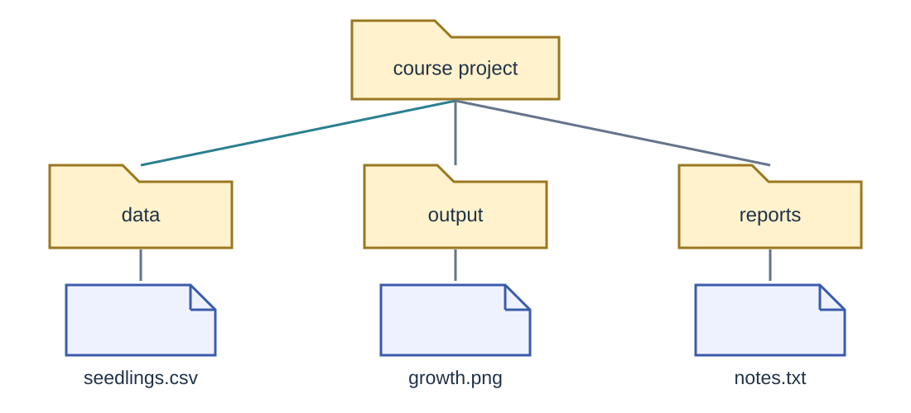
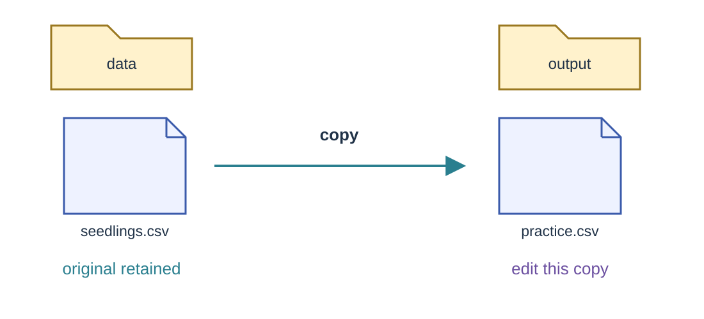
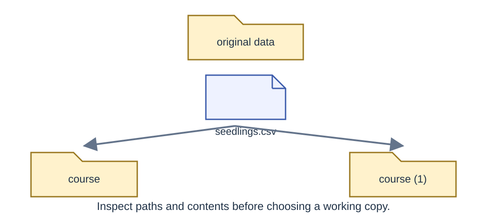

Did a treatment make seedlings grow more? The measurements are in a file. Before we can analyse anything, we need that file on our own computer, and we need to be able to find it again.
Today you will:
download the course files and unpack them into a folder you choose;
find and open the seedling measurements;
save a note, close everything, and open the note again.
No programming today. Every later day starts from files you can find.
The data: one row per seedling
The header labels fields while a record describes one plant.
24 seedlings: 12 treated, 12 controls. Each was measured at the start and at the end (mm).
P01 grew from 25.7 mm to 44.3 mm, so it grew 18.6 mm.
Download and unpack the course files
Download the course ZIP.
Show it in File Explorer (Windows) or Finder (Mac).
Extract the whole ZIP.
Move the extracted folder to Documents.
Open data, then seedlings.csv.
Open files from the extracted folder, not from inside the ZIP.

The project contains data, output, and reports folders; seedlings.csv is inside data.
A file is not the window showing it
One saved CSV can be read as text or as a table in different applications.
The same seedlings.csv can be opened in a text editor or a spreadsheet.
Closing the window does not delete the file.
Read the whole filename
The base name and .csv extension play different roles in seedlings-practice.csv.
The ending (.csv, .txt) is part of the name. Turn on “show file extensions”.
Renaming a file does not change what is inside it.
Keep the original; work on a copy

Copying the raw CSV into output creates a separate practice file while retaining the original.
Copy data/seedlings.csv to output/seedlings-practice.csv. Change only the copy.
Save, close, and reopen
An edited note is saved to disk and then reopened from its folder.
Save day01-notes.txt in reports/. Close the editor. Find the note through its folder and open it again.
Two similar folders? Pick one

One original can lead to several extracted project folders with similar names.
Downloading or extracting twice gives similar folders. Choose one to work in, and do not delete the other until you know what is in it.
Check yourself
You close the editor. Is the saved note gone?
You change seedlings-practice.csv. Did data/seedlings.csv change?
You rename a .csv to .txt. Did the numbers change?
You know a file’s name. Do you know which folder it is in?
Summary
A file is saved in a folder. Programs only open and show it.
The full filename includes its ending, such as .csv.
Keep the original data unchanged; work on a copy.
Saved means you can close everything and open it again from its folder.
Next (Day 2): writing down where a file is, as a path.
Now:open the Day 1 exercises. Leave with reports/day01-notes.txt and output/seedlings-practice.csv, and be able to find both after closing every window.